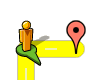
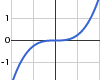
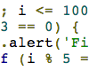
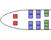
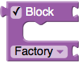

Blockly Apps | |
| Blockly is a graphical programming environment. Below are some sample applications that use Blockly. |
Use Blockly with NetLogo. |
|
Learn to use Blockly's interface. |
|
|  | Use Blockly to solve a maze. |
Use Blockly to draw. |
|
|  | Plot functions with Blockly. |
|  | Export a Blockly program into JavaScript, Python, Dart or XML. |
|  | Solve a math problem with one or two variables. |
|  | Build custom blocks using Blockly. |